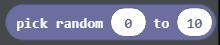

Projektni zadatak - Toplo - Hladno¶
Kao i vi, programi u MakeCode-u mogu donositi odluke. Do sada su svi programi koje smo kreirali bili linearni programi, točnije programi u kojima se naredbe izvršavaju uzastopno, jedna za drugom do kraja programa. Za razliku od ovih programa, gdje se svaki korak, tj. svaka naredba, izvršava jednom, u algoritmima za donošenje odluke, ili točnije, uvjetnim (granskim) algoritmima, neke se naredbe izvršavaju, a neke neće, što ovisi o tome je li uvjet ispunjen ili ne.
Ovaj ćemo koncept demonstrirati programiranjem igre Toplo - Hladno. Na temelju položaja lika (igrača) prikazuje se poruka koliko je udaljena od objekta smještenog negdje u svijetu. Ako je lik blizu, izgovorit će Toplo, a ako je lik daleko od objekta, izgovarat će se riječ Hladno. Ako je lik (igrač) vrlo blizu objekta, program će reći Vrelo, , a ako je jako daleko, program će reći Ledeno.
Faza 1.
Razmišljajući o zadatku: Za određivanje udaljenosti objekta do lika (igrača) trebamo izmjeriti udaljenost između njih, a na temelju tih vrijednosti dobit ćemo željenu poruku.
Faza 2
Otvorite Code Builder (klikom na tipku C); pojavit će se prozor za uređivanje u koji možete slagati blokove.
Na samom početku trebamo definirati objekt i smjestiti ga u svijet, što ćemo i učiniti u bloku “on start”. Položaj ćemo definirati na način da koordinata X ima slučajnu vrijednost od intervala 0 do 600, a preostale dvije koordinate imaju vrijednosti Y i Z igrača.
Da bismo to postigli moramo stvoriti varijable X, Y, Z (one pohranjuju koordinate položaja objekta) i Block (pohranjuje objekt). Trebamo postaviti i početne vrijednosti za varijable koje smo stvorili.
U bloku  definirat ćemo položaj i vrstu objekta povlačenjem blokova na sljedeći način:
definirat ćemo položaj i vrstu objekta povlačenjem blokova na sljedeći način:
definiramo koordinatu x sa varijablom
X, koja će imati slučajnu vrijednost od intervala 0 do 600, to se postiže blokom  iz kategorije .
.definiramo koordinatu y s varijablom
Y, koja će imati vrijednost y koordinate položaja igrača u svijetu. To se postiže blokom iz kategorije
iz kategorije  , gdje ćemo staviti varijablu
, gdje ćemo staviti varijablu Yumjesto varijable pozicija, i blok iz kategorije
iz kategorije  .
.definiramo koordinatu z sa varijablom
Z, koja će imati vrijednost z koordinate z igračeve pozicije u svijetu. To se postiže blokom iz kategorije , gdje ćemo staviti varijablu
iz kategorije , gdje ćemo staviti varijablu Zumjesto varijable pozicija, i blok iz kategorije .definiramo objekt koji treba staviti negdje u svijetu. To se postiže korištenjem bloka
 iz kategorije
iz kategorije  .
.
Izgled koda nakon definiranja varijabli:

Nakon što definiramo varijable i objekt, moramo povući blok koji će taj objekt fizički smjestiti negdje u svijetu.
Za to ćemo koristiti blok  iz kategorije . Ovaj blok ima dva bloka argumenata, u prvom bloku argumenata povući ćemo varijablu , a u drugom ćemo staviti koordinate
iz kategorije . Ovaj blok ima dva bloka argumenata, u prvom bloku argumenata povući ćemo varijablu , a u drugom ćemo staviti koordinate  ,
,  i za definiranje položaja objekta pomoću bloka
i za definiranje položaja objekta pomoću bloka  iz kategorije .
iz kategorije .
Izgled izmijenjenog koda:

Na ovaj način dovršili smo pozicioniranje objekta u svijetu Minecrafta. Ako želimo vidjeti njegove koordinate, možemo se poslužiti blokom  . Za prikazivanje ovih podataka možemo koristiti blok
. Za prikazivanje ovih podataka možemo koristiti blok  iz potkategorije
iz potkategorije  kategorije
kategorije  .
.
Izgled programa nakon dodavanja ovog bloka:

Naš sljedeći korak bio bi povlačenje blokova, pomoću kojih ćemo odrediti udaljenost između objekta postavljenog u svijetu i lika (igrača), u blok  . To ćemo učiniti definiranjem varijabli koje će odrediti poziciju lika (igrača), tj. odrediti x, y i z koordinate znaka. Pojedinačne koordinate dobivaju se pomoću bloka i blok .
. To ćemo učiniti definiranjem varijabli koje će odrediti poziciju lika (igrača), tj. odrediti x, y i z koordinate znaka. Pojedinačne koordinate dobivaju se pomoću bloka i blok .
Stvaramo varijable X1, Y1 i Z1 i dajemo im vrijednosti koordinata položaja lika:

Da bismo izračunali udaljenost između lika i objekta, moramo primijeniti formulu koja se također koristi u matematici za određivanje udaljenosti u 3D između dvije točke A (x1, y1, z1) i B(x2, y2, z2):

Kreiramo varijablu udaljenost, i dajemo vrijednost dobivenu formulom za izračunavanje udaljenosti između dviju točaka.
U MakeCode-u su matematičke operacije smještene u kategoriju . Izradit ćemo gore spomenutu formulu jednostavnim dodavanjem odgovarajućih blokova (+, -, i kvadrat **, kao i kvadratni korijen):

Izgled nadograđenog koda:
Sada kada imamo vrijednost varijable udaljenost, možemo dovršiti našu igru Toplo i hladno.
Na temelju udaljenosti lika (igrača) od objekta, Minecraft obavještava lika (igrača) o lokaciji objekta kratkim porukama, poput Toplo, ako je objekt u blizini i Hladno, ako je objekt daleko. Ako je lik (igrač) vrlo blizu objekta, program će reći Vrelo, a ako je jako daleko, program će reći Ledeno.
Na temelju postavljanja zadatka:
Ako je udaljenost između lika (igrača) i objekta veća od 100 blokova, program bi trebao reći Ledeno.
Ako je udaljenost između lika (igrača) i objekta veća od 50 blokova, program bi trebao reći Hladno.
Ako je udaljenost između lika (igrača) i objekta veća od 25 blokova, program bi trebao reći Toplo.
Ako je udaljenost između lika (igrača) i objekta veća od 12 blokova, program bi trebao reći Vrelo.
Ako se objekt nalazi pored lika (udaljenost je 0), program treba reći Pronađeno.
Za to ćemo koristiti blok  i operateri za usporedbu (> i =) iz kategorije
i operateri za usporedbu (> i =) iz kategorije  . Grane dodajemo klikom na +.
Izgled koda nakon dodavanja ovih blokova:
. Grane dodajemo klikom na +.
Izgled koda nakon dodavanja ovih blokova:
Izgled završnog programa igre Toplo i Hladno:
Faza 3
Testiranje programa.
Klikom na gumb  .
.
Započinjemo chat pritiskom na tipku T na tipkovnici i unosimo riječ gdje u chat, koja će biti “okidač” za početak igre.